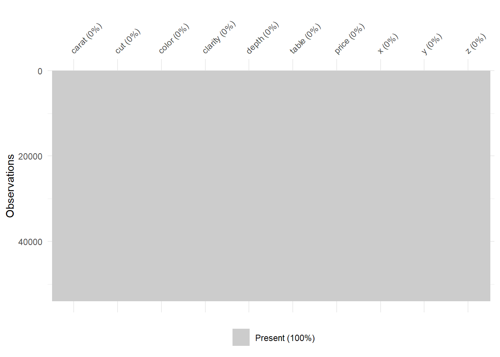
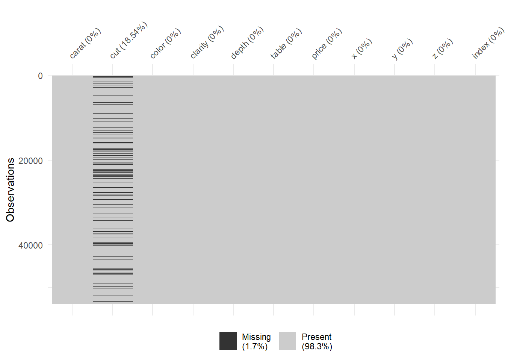
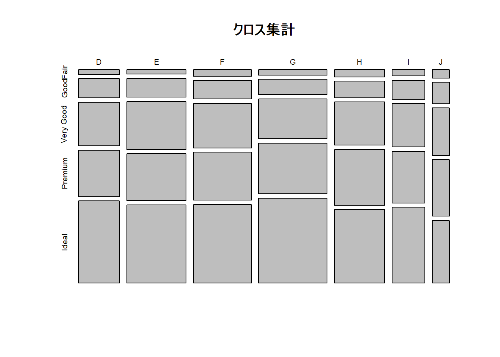

Chapter: 7 Rでクロス集計（janitor）
janitorパッケージを使うと、Rでのクロス集計がかなり捗る。
クロス集計をする前に、まずは1つのデータでの度数表の作成や、その他便利な関数を紹介する。
その後に、クロス集計を行う。
最後に、クロス集計で出来たデータでの可視化も行ってみる。
7.1 janitorパッケージ
7.2 データの準備
Rに標準搭載されているdiamondsデータを使う。
今回はクロス集計をおこなうため、cut と colorのカラムを主に扱う。
Rows: 53,940
Columns: 10
$ carat <dbl> 0.23, 0.21, 0.23, 0.29, 0.31, 0.24, 0.24, 0.26, 0.22, 0.23, 0.30, 0.23, 0.22, 0.31, 0.20, 0.32, 0.30, 0.30, 0.30, 0.30, 0.30, 0.23, 0.23, 0.31, 0.31, 0.23, 0.24...
$ cut <ord> Ideal, Premium, Good, Premium, Good, Very Good, Very Good, Very Good, Fair, Very Good, Good, Ideal, Premium, Ideal, Premium, Premium, Ideal, Good, Good, Very Go...
$ color <ord> E, E, E, I, J, J, I, H, E, H, J, J, F, J, E, E, I, J, J, J, I, E, H, J, J, G, I, J, D, F, F, F, E, E, D, F, E, H, D, I, I, J, D, D, H, F, H, H, E, H, F, G, I, E...
$ clarity <ord> SI2, SI1, VS1, VS2, SI2, VVS2, VVS1, SI1, VS2, VS1, SI1, VS1, SI1, SI2, SI2, I1, SI2, SI1, SI1, SI1, SI2, VS2, VS1, SI1, SI1, VVS2, VS1, VS2, VS2, VS1, VS1, VS1...
$ depth <dbl> 61.5, 59.8, 56.9, 62.4, 63.3, 62.8, 62.3, 61.9, 65.1, 59.4, 64.0, 62.8, 60.4, 62.2, 60.2, 60.9, 62.0, 63.4, 63.8, 62.7, 63.3, 63.8, 61.0, 59.4, 58.1, 60.4, 62.5...
$ table <dbl> 55, 61, 65, 58, 58, 57, 57, 55, 61, 61, 55, 56, 61, 54, 62, 58, 54, 54, 56, 59, 56, 55, 57, 62, 62, 58, 57, 57, 61, 57, 57, 57, 59, 58, 58, 59, 59, 54, 59, 55, ...
$ price <int> 326, 326, 327, 334, 335, 336, 336, 337, 337, 338, 339, 340, 342, 344, 345, 345, 348, 351, 351, 351, 351, 352, 353, 353, 353, 354, 355, 357, 357, 357, 402, 402, ...
$ x <dbl> 3.95, 3.89, 4.05, 4.20, 4.34, 3.94, 3.95, 4.07, 3.87, 4.00, 4.25, 3.93, 3.88, 4.35, 3.79, 4.38, 4.31, 4.23, 4.23, 4.21, 4.26, 3.85, 3.94, 4.39, 4.44, 3.97, 3.97...
$ y <dbl> 3.98, 3.84, 4.07, 4.23, 4.35, 3.96, 3.98, 4.11, 3.78, 4.05, 4.28, 3.90, 3.84, 4.37, 3.75, 4.42, 4.34, 4.29, 4.26, 4.27, 4.30, 3.92, 3.96, 4.43, 4.47, 4.01, 3.94...
$ z <dbl> 2.43, 2.31, 2.31, 2.63, 2.75, 2.48, 2.47, 2.53, 2.49, 2.39, 2.73, 2.46, 2.33, 2.71, 2.27, 2.68, 2.68, 2.70, 2.71, 2.66, 2.71, 2.48, 2.41, 2.62, 2.59, 2.41, 2.47...先頭100行だけを表示。
欠損値は存在しない。

7.3 cutカラムの度数表
通常のやり方では、（１）table関数を使用して次のようにしたり、
Fair Good Very Good Premium Ideal
1610 4906 12082 13791 21551 （２）count関数を使ったり
# A tibble: 5 x 2
cut n
<ord> <int>
1 Fair 1610
2 Good 4906
3 Very Good 12082
4 Premium 13791
5 Ideal 21551（３）dplyrを使う方法などがある。
# A tibble: 5 x 2
cut n
<ord> <int>
1 Fair 1610
2 Good 4906
3 Very Good 12082
4 Premium 13791
5 Ideal 21551janitorパッケージの関数を使うと、次のように書くことができる。
table関数の進化系という感じで、tabylという関数を使う。
cut n percent
Fair 1610 0.02984798
Good 4906 0.09095291
Very Good 12082 0.22398962
Premium 13791 0.25567297
Ideal 21551 0.39953652見てわかると思うが、度数の横に割合も表示してくれるのが既に便利である。
なおtabylの出力結果のclassはtabyl(data.frame)となっているので、tibbleにして扱いやすくしておく。
[1] "tabyl" "data.frame"# A tibble: 5 x 3
cut n percent
<ord> <dbl> <dbl>
1 Fair 1610 0.0298
2 Good 4906 0.0910
3 Very Good 12082 0.224
4 Premium 13791 0.256
5 Ideal 21551 0.400 dplyrで割合の計算もしようとすると、コードが少し長くなる。
# A tibble: 5 x 3
cut n percent
<ord> <int> <dbl>
1 Fair 1610 0.0298
2 Good 4906 0.0910
3 Very Good 12082 0.224
4 Premium 13791 0.256
5 Ideal 21551 0.400 7.4 欠損がある場合
最初に確認したが、もとのdiamondsデータには欠損が含まれていないので、人工的に欠損値を仕込む。
N <- nrow(data)
set.seed(334)
n <- sample(1:N, 10000)
data_include_na <-
data %>%
mutate(index = row_number()) %>%
mutate(cut = if_else(index %in% n, as.character(NA), as.character(cut)))
data_include_na %>% vis_miss()
集計値にNAがある場合、valid_percent（欠損を除いた割合）カラムが自動的に追加される。
# A tibble: 6 x 4
cut n percent valid_percent
<chr> <dbl> <dbl> <dbl>
1 Fair 1295 0.0240 0.0295
2 Good 3957 0.0734 0.0901
3 Ideal 17594 0.326 0.400
4 Premium 11317 0.210 0.258
5 Very Good 9777 0.181 0.223
6 <NA> 10000 0.185 NA 7.5 度数表のtotal値
度数表にtotal値を追加するにはadorn_totalsという関数を使用する。
adornは「装飾する」という意味らしい。
最後の行にTotal値が入る。
# A tibble: 7 x 4
cut n percent valid_percent
<chr> <dbl> <dbl> <dbl>
1 Fair 1295 0.0240 0.0295
2 Good 3957 0.0734 0.0901
3 Ideal 17594 0.326 0.400
4 Premium 11317 0.210 0.258
5 Very Good 9777 0.181 0.223
6 <NA> 10000 0.185 NA
7 Total 53940 1 1 7.6 度数表の％表記
度数表を作成したあとにそのデータで分析を進めないのであれば、割合を％表記にすると少し表が見やすくなる。
adorn_pct_formatting関数を使う。
digits で桁数を指定する。
affix_singをFALSEにすれば％表記を消すこともできる。
data_include_na %>%
tabyl(cut) %>%
adorn_totals() %>%
adorn_pct_formatting(digits = 2, affix_sign = TRUE) %>%
as_tibble() # A tibble: 7 x 4
cut n percent valid_percent
<chr> <dbl> <chr> <chr>
1 Fair 1295 2.40% 2.95%
2 Good 3957 7.34% 9.01%
3 Ideal 17594 32.62% 40.04%
4 Premium 11317 20.98% 25.76%
5 Very Good 9777 18.13% 22.25%
6 <NA> 10000 18.54% -
7 Total 53940 100.00% 100.00% 7.7 クロス集計
いよいよクロス集計をしてみる。
7.7.1 通常のやり方
通常のやり方では、table関数を使用して次のようにする。
度数表
D E F G H I J
Fair 136 179 243 248 248 142 99
Good 555 756 715 689 572 425 245
Ideal 2284 3219 3124 4000 2518 1711 738
Premium 1302 1919 1920 2386 1933 1181 676
Very Good 1252 1936 1755 1857 1480 968 529割合
D E F G H I J
Fair 0.003095130 0.004073737 0.005530269 0.005644060 0.005644060 0.003231680 0.002253072
Good 0.012630860 0.017205280 0.016272189 0.015680473 0.013017751 0.009672280 0.005575785
Ideal 0.051979973 0.073258990 0.071096950 0.091033227 0.057305416 0.038939463 0.016795630
Premium 0.029631315 0.043673191 0.043695949 0.054301320 0.043991807 0.026877560 0.015384615
Very Good 0.028493400 0.044060082 0.039940828 0.042262176 0.033682294 0.022030041 0.0120391447.7.2 janitorのやり方
janitorパッケージのtabyl関数を使うと次のように書ける。
度数表
# A tibble: 6 x 8
cut D E F G H I J
<chr> <dbl> <dbl> <dbl> <dbl> <dbl> <dbl> <dbl>
1 Fair 136 179 243 248 248 142 99
2 Good 555 756 715 689 572 425 245
3 Ideal 2284 3219 3124 4000 2518 1711 738
4 Premium 1302 1919 1920 2386 1933 1181 676
5 Very Good 1252 1936 1755 1857 1480 968 529
6 <NA> 1246 1788 1785 2112 1553 995 521割合
adorn_percentages関数を使用する。
denominatorは “all”, “col”, “row”の中から選ぶことができる。
同時確率を見たいか、行か列での条件つき確率をみたいかどうかで変える。
# A tibble: 6 x 8
cut D E F G H I J
<chr> <dbl> <dbl> <dbl> <dbl> <dbl> <dbl> <dbl>
1 Fair 0.00252 0.00332 0.00451 0.00460 0.00460 0.00263 0.00184
2 Good 0.0103 0.0140 0.0133 0.0128 0.0106 0.00788 0.00454
3 Ideal 0.0423 0.0597 0.0579 0.0742 0.0467 0.0317 0.0137
4 Premium 0.0241 0.0356 0.0356 0.0442 0.0358 0.0219 0.0125
5 Very Good 0.0232 0.0359 0.0325 0.0344 0.0274 0.0179 0.00981
6 <NA> 0.0231 0.0331 0.0331 0.0392 0.0288 0.0184 0.00966# A tibble: 6 x 8
cut D E F G H I J
<chr> <dbl> <dbl> <dbl> <dbl> <dbl> <dbl> <dbl>
1 Fair 0.0201 0.0183 0.0255 0.0220 0.0299 0.0262 0.0353
2 Good 0.0819 0.0772 0.0749 0.0610 0.0689 0.0784 0.0873
3 Ideal 0.337 0.329 0.327 0.354 0.303 0.316 0.263
4 Premium 0.192 0.196 0.201 0.211 0.233 0.218 0.241
5 Very Good 0.185 0.198 0.184 0.164 0.178 0.179 0.188
6 <NA> 0.184 0.183 0.187 0.187 0.187 0.184 0.186 # A tibble: 6 x 8
cut D E F G H I J
<chr> <dbl> <dbl> <dbl> <dbl> <dbl> <dbl> <dbl>
1 Fair 0.105 0.138 0.188 0.192 0.192 0.110 0.0764
2 Good 0.140 0.191 0.181 0.174 0.145 0.107 0.0619
3 Ideal 0.130 0.183 0.178 0.227 0.143 0.0972 0.0419
4 Premium 0.115 0.170 0.170 0.211 0.171 0.104 0.0597
5 Very Good 0.128 0.198 0.180 0.190 0.151 0.0990 0.0541
6 <NA> 0.125 0.179 0.178 0.211 0.155 0.0995 0.05217.8 クロス集計の装飾
7.8.1 totalと％
度数表と同様にして、Total値を付けたり、％表記をすることができる。
カラムごとに合計
data_include_na %>%
tabyl(cut, color) %>%
adorn_totals(where = c("row")) %>%
adorn_percentages(denominator = "col") %>%
adorn_pct_formatting(digits = 2, affix_sign = TRUE) %>%
as_tibble() # A tibble: 7 x 8
cut D E F G H I J
<chr> <chr> <chr> <chr> <chr> <chr> <chr> <chr>
1 Fair 2.01% 1.83% 2.55% 2.20% 2.99% 2.62% 3.53%
2 Good 8.19% 7.72% 7.49% 6.10% 6.89% 7.84% 8.73%
3 Ideal 33.71% 32.86% 32.74% 35.42% 30.32% 31.56% 26.28%
4 Premium 19.22% 19.59% 20.12% 21.13% 23.28% 21.78% 24.07%
5 Very Good 18.48% 19.76% 18.39% 16.45% 17.82% 17.85% 18.84%
6 <NA> 18.39% 18.25% 18.71% 18.70% 18.70% 18.35% 18.55%
7 Total 100.00% 100.00% 100.00% 100.00% 100.00% 100.00% 100.00%行ごとに合計
data_include_na %>%
tabyl(cut, color) %>%
adorn_totals(where = c("col")) %>%
adorn_percentages(denominator = "row") %>%
adorn_pct_formatting(digits = 2, affix_sign = TRUE) %>%
as_tibble() # A tibble: 6 x 9
cut D E F G H I J Total
<chr> <chr> <chr> <chr> <chr> <chr> <chr> <chr> <chr>
1 Fair 10.50% 13.82% 18.76% 19.15% 19.15% 10.97% 7.64% 100.00%
2 Good 14.03% 19.11% 18.07% 17.41% 14.46% 10.74% 6.19% 100.00%
3 Ideal 12.98% 18.30% 17.76% 22.74% 14.31% 9.72% 4.19% 100.00%
4 Premium 11.50% 16.96% 16.97% 21.08% 17.08% 10.44% 5.97% 100.00%
5 Very Good 12.81% 19.80% 17.95% 18.99% 15.14% 9.90% 5.41% 100.00%
6 <NA> 12.46% 17.88% 17.85% 21.12% 15.53% 9.95% 5.21% 100.00%全体で合計
data_include_na %>%
tabyl(cut, color) %>%
adorn_totals(where = c("col", "row")) %>%
adorn_percentages(denominator = "all") %>%
adorn_pct_formatting(digits = 2, affix_sign = TRUE) %>%
as_tibble() # A tibble: 7 x 9
cut D E F G H I J Total
<chr> <chr> <chr> <chr> <chr> <chr> <chr> <chr> <chr>
1 Fair 0.25% 0.33% 0.45% 0.46% 0.46% 0.26% 0.18% 2.40%
2 Good 1.03% 1.40% 1.33% 1.28% 1.06% 0.79% 0.45% 7.34%
3 Ideal 4.23% 5.97% 5.79% 7.42% 4.67% 3.17% 1.37% 32.62%
4 Premium 2.41% 3.56% 3.56% 4.42% 3.58% 2.19% 1.25% 20.98%
5 Very Good 2.32% 3.59% 3.25% 3.44% 2.74% 1.79% 0.98% 18.13%
6 <NA> 2.31% 3.31% 3.31% 3.92% 2.88% 1.84% 0.97% 18.54%
7 Total 12.56% 18.16% 17.69% 20.93% 15.39% 10.05% 5.21% 100.00%7.8.2 集計値の名前を変更
adorn_titleという関数を使うと、何と何で集計を行っているかを一番左上のセルに追加できる。
data_include_na %>%
tabyl(cut, color) %>%
adorn_totals(where = c("row", "col")) %>%
adorn_percentages(denominator = "col") %>%
adorn_pct_formatting(digits = 2) %>%
adorn_title(placement = "combined", col_name = "color") %>%
as_tibble() # A tibble: 7 x 9
`cut/color` D E F G H I J Total
<chr> <chr> <chr> <chr> <chr> <chr> <chr> <chr> <chr>
1 Fair 2.01% 1.83% 2.55% 2.20% 2.99% 2.62% 3.53% 2.40%
2 Good 8.19% 7.72% 7.49% 6.10% 6.89% 7.84% 8.73% 7.34%
3 Ideal 33.71% 32.86% 32.74% 35.42% 30.32% 31.56% 26.28% 32.62%
4 Premium 19.22% 19.59% 20.12% 21.13% 23.28% 21.78% 24.07% 20.98%
5 Very Good 18.48% 19.76% 18.39% 16.45% 17.82% 17.85% 18.84% 18.13%
6 <NA> 18.39% 18.25% 18.71% 18.70% 18.70% 18.35% 18.55% 18.54%
7 Total 100.00% 100.00% 100.00% 100.00% 100.00% 100.00% 100.00% 100.00%7.8.3 度数表と割合を同時に表示
adorn_nsという関数を使うと、度数と割合を同時に表示できる。
引数positionに
- “front”を指定すると割合が（）内に表示される
- “rear”を指定すると度数が（）内に表示される
7.9 関数化
2つの変数を入れるとクロス集計表が出てくるように関数化しておくと便利だろう。
（2重 curly brackets{{}}やenquoなどの黒魔術はスルーしてほしい）
cross_tally <- function(data, var1, var2, affix_sign_TF = TRUE, adorn_ns_TF = TRUE){
res <-
data %>%
tabyl({{var1}}, {{var2}}) %>%
adorn_totals(where = c("row", "col")) %>%
adorn_percentages(denominator = "col") %>%
adorn_pct_formatting(digits = 2, affix_sign = affix_sign_TF) %>%
adorn_title(placement = "combined",
row_name = as_label(enquo(var1)),
col_name = as_label(enquo(var2)))
if (adorn_ns_TF){
res <-
res %>% adorn_ns(position = "front")
}
return(as_tibble(res))
}# A tibble: 7 x 9
`cut/color` D E F G H I J Total
<chr> <chr> <chr> <chr> <chr> <chr> <chr> <chr> <chr>
1 Fair " 136 (2.01%)" " 179 (1.83%)" " 243 (2.55%)" " 248 (2.20%)" " 248 (2.99%)" " 142 (2.62%)" " 99 (3.53%)" " 1295 (2.40%)"
2 Good " 555 (8.19%)" " 756 (7.72%)" " 715 (7.49%)" " 689 (6.10%)" " 572 (6.89%)" " 425 (7.84%)" " 245 (8.73%)" " 3957 (7.34%)"
3 Ideal "2284 (33.71%)" "3219 (32.86%)" "3124 (32.74%)" " 4000 (35.42%)" "2518 (30.32%)" "1711 (31.56%)" " 738 (26.28%)" "17594 (32.62%)"
4 Premium "1302 (19.22%)" "1919 (19.59%)" "1920 (20.12%)" " 2386 (21.13%)" "1933 (23.28%)" "1181 (21.78%)" " 676 (24.07%)" "11317 (20.98%)"
5 Very Good "1252 (18.48%)" "1936 (19.76%)" "1755 (18.39%)" " 1857 (16.45%)" "1480 (17.82%)" " 968 (17.85%)" " 529 (18.84%)" " 9777 (18.13%)"
6 <NA> "1246 (18.39%)" "1788 (18.25%)" "1785 (18.71%)" " 2112 (18.70%)" "1553 (18.70%)" " 995 (18.35%)" " 521 (18.55%)" "10000 (18.54%)"
7 Total "6775 (100.00%)" "9797 (100.00%)" "9542 (100.00%)" "11292 (100.00%)" "8304 (100.00%)" "5422 (100.00%)" "2808 (100.00%)" "53940 (100.00%)"7.10 可視化
7.10.1 モザイクプロット
クロス集計表はモザイクプロットを使用して可視化することが多いが、結構見づらいことが多い。
df <- data %>%
tabyl(cut, color) %>%
adorn_percentages(denominator = "all") %>%
adorn_title(placement = "combined", col_name = "color") %>%
as_tibble()
mat <- df %>% select(-`cut/color`) %>% as.matrix()
colnames(mat) <- colnames(df %>% select(-`cut/color`))
rownames(mat) <- df$`cut/color`
t(mat) %>% mosaicplot("クロス集計")
DTパッケージを使用して、テーブルのまま装飾を加えることできれいに可視化することができる。
7.10.2 通常のテーブル
7.10.3 装飾を加えたテーブル
df <- data %>%
tabyl(cut, color) %>%
adorn_percentages(denominator = "all") %>%
adorn_title(placement = "combined", col_name = "color") %>%
as_tibble()
df %>%
mutate_if(is.double, round, 5) %>%
DT::datatable() %>%
formatStyle(names(df),
background = styleColorBar(range(df %>% select(-`cut/color`)), 'lightblue'),
backgroundSize = '98% 88%',
backgroundRepeat = 'no-repeat',
backgroundPosition = 'center')